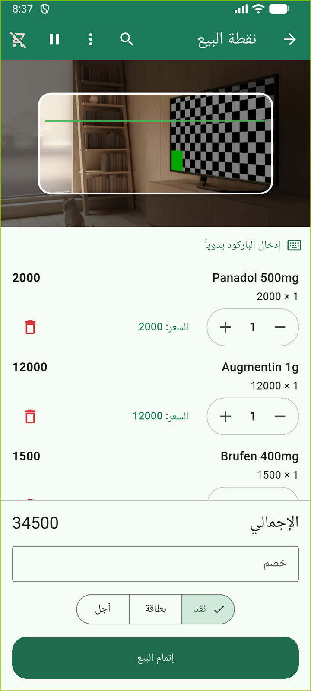

شاشة البيع: سلة بعدة أصناف معاينة الإيصال بعد البيع
معاينة الإيصال بعد البيعنظرة عامة على شاشة البيع
شاشة البيع (POS) هي واجهة الكاشير الرئيسية في الصيدلية. في هذه الشاشة تقوم بـ:
- مسح باركود المنتجات أو البحث عنها
- إضافة المنتجات للسلة
- تعديل الكميات والأسعار
- اختيار طريقة الدفع
- إتمام البيع وطباعة الإيصال
↕️ العناصر الأساسية في الشاشة
1
منطقة الكاميرا العلوية: للمسح الضوئي للباركود. تتقلص تلقائياً عند ظهور لوحة المفاتيح.
2
قائمة السلة: تظهر المنتجات المضافة مع السعر والكمية. يمكنك تعديل كل صنف بزيادة/إنقاص الكمية أو حذفه.
3
شريط الإجماليات: يظهر المجموع النهائي (بعد الخصم إن وجد). يظهر "المجموع الفرعي" و"الخصم" فقط عند وجود خصم فعلي.
4
زر "إتمام البيع": هو الزر الأخير في الأسفل — يظهر فقط عندما السلة غير فارغة.
5
زر "إلغاء" في الأعلى: يمسح السلة بالكامل. يظهر فقط عندما السلة غير فارغة.
إضافة منتج للسلة
هناك ثلاث طرق لإضافة منتج:
الطريقة الأولى: المسح بالكاميرا (السرعة)
1
افتح شاشة البيع (الكاميرا مفتوحة تلقائياً)
2
ضع باركود العبوة بين إطار الكاميرا (داخل الخطوط الرمادية)
3
عندما يقرأ النظام الباركود بنجاح، يظهر المنتج تلقائياً في السلة
نصيحة: الكاميرا تقرأ الباركود وتضيفه فوراً — لا حاجة لضغط أي زر. فقط أشر إلى الباركود.
الطريقة الثانية: البحث النصي
1
اضغط أيقونة البحث (🔍 في الأعلى) في شريط التطبيق
2
اكتب اسم المنتج أو باركوده أو أي جزء من الاسم
3
اختر المنتج من القائمة المعروضة
4
يُضاف المنتج للسلة فوراً
البحث يعمل حتى للمنتجات بدون باركود — أي منتج مسجل في النظام يمكن إضافته بهذه الطريقة.
الطريقة الثالثة: الإدخال اليدوي للباركود
1
اضغط زر "إدخال الباركود يدوياً" (⌨️ أسفل الكاميرا)
2
اكتب أرقام الباركود (فقط أرقام، بدون مسافات)
3
اضغط "تأكيد" — النظام يحاول إضافة المنتج
مفيد عندما تكون العدسة متسخة أو الملصق تالف، أو عند البيع على جهاز بلا كاميرا.
تحذير: إذا ظهر رسالة "المنتج غير معروف" — هذا يعني أن الباركود غير مسجل في النظام. يجب إضافة المنتج أولاً من إدارة المخزون (للصيدلاني/الأدمن فقط).
تعديل السلة
تغيير كمية منتج
1
في سطر المنتج في السلة، اضغط + لزيادة الكمية أو - لإنقاصها
2
عند الوصول للصفر، يُحذف السطر تلقائياً
زر "-" عند كمية 1 يحذف السطر بالكامل.
حذف منتج من السلة
1
اضغط زر الحذف (🗑️) في نهاية سطر المنتج
2
يؤكد النظام — اضغط "تأكيد" للحذف
لا يمكن التراجع عن الحذف — المنتج يختفي من السلة فوراً.
تعديل سعر الوحدة (للصيدلاني والأدمن فقط)
1
في سطر المنتج، اضغط زر "تعديل السعر" (يظهر فقط للصيدلاني والأدمن)
2
اكتب السعر الجديد واضغط "حفظ"
3
يظهر سطر "السعر الأصلي" بجوار السعر المعدل
ملاحظة: تعديل السعر يظهر كشارة "معدّل" على السطر حتى نهاية الفاتورة. السعر الأصلي يظل مرئياً للتحقق.
الخصم على الفاتورة
يمكنك تطبيق خصم يدوي على الفاتورة كاملة:
1
اسحب شريط الخصم اليدوي (ظهر أسفل السلة عندما السلة غير فارغة)
2
اكتب المبلغ المطلوب خصمه (عدد صحيح، ولا توجد فاصلة عشرية)
3
اضغط خارج الحقل أو اتركه — الخصم يطبق تلقائياً
4
شريط الإجماليات يظهر المجموع الفرعي والخصم والمجموع النهائي
الخصم اليدوي فقط (نسبة مئوية غير متاحة في الواجهة — النظام يدعمها خلف الكواليس لكن الواجهة تبقيه بسيطاً).
الخصم يُمسح تلقائياً بعد إتمام البيع أو إلغاء السلة — لا يدوم بين عمليات البيع.
اختيار طريقة الدفع
قبل إتمام البيع، اختر طريقة الدفع من الخيارات الثلاثة (تظهر فقط عندما السلة غير فارغة):
💵 نقدي (افتراضي)
الخيار الافتراضي دائماً. إذا كان العميل سيدفع نقداً، لا حاجة لتغيير الخيار.
💳 بطاقة
اختر هذا الخيار عندما يدفع العميل ببطاقة مصرفية.
📅 آجل / ائتمان
للبيع على الحساب للعميل. يظهر شارة "غير مدفوع" على الفاتورة في الأرشيف.
تنبيه: هذا الخيار يُستخدم للبيع الآجل — يتطلب وجود عميل مسجل (مرحلة مستقبلية).
1
اضغط على شريحة طريقة الدفع المطلوبة
2
الخيارات الثلاثة تظهر بجانب زر "إتمام البيع" مباشرة
3
الخيار المختار يبقى محدداً — يمكنك تغييره قبل الإتمام
طريقة الدفع تُمسح إلى "نقدي" تلقائياً بعد كل بيع ناجح — الافتراضي دائماً للعميل التالي.
إتمام البيع
هذه الخطوة النهائية تحفظ الفاتورة وتخصم المخزون:
1
تأكد أن السلة تحتوي على المنتجات المطلوبة والكميات صحيحة
2
تأكد أن طريقة الدفع مختارة (نقدي افتراضياً)
3
اضغط زر "إتمام البيع" الأخضر (في الأسفل)
4
النظام ينفذ العملية:
- يُولّد رقم فاتورة تلقائياً (INV-السنة-التسلسل)
- يحسب الإجمالي النهائي مع الخصم والضريبة
- يطبّق FEFO لاختيار الدفعة المناسبة (الأقدم انتهاءً أولًا)
- يتحقق من صلاحية الدفعة (ليست منتهية)
- يطبق خصم المخزون من الدفعة الصحيحة
- يسجل حركة مخزون سالبة
- يُنشئ سجلاً في طابور المزامنة لإرساله لاحقاً
5
تظهر رسالة نجاح مع رقم الفاتورة
بعد النجاح: السلة تُمسح تلقائياً — جاهزة للعميل التالي. لا توجد شاشة تأكيد.
طباعة الإيصال
بعد إتمام البيع بنجاح، يظهر زر "طباعة الإيصال" بالقرب من رسالة النجاح:
1
اضغط زر الطباعة (🖨️) الذي يظهر بعد البيع بنجاح
2
يُفتح شاشة معاينة الإيصال
3
اضغط "مشاركة" أو "طباعة" لطباعة الإيصال أو حفظه كـ PDF
زر الطباعة متاح لجميع الأدوار — الكاشير يمكنه طباعة الإيصال للعميل دون الحاجة للأدمن.
تعليق السلة (للبائع التالي)
عندما يحتاج البائع إلى استئناف البيع لزبون آخر مؤقتاً:
1
اضغط زر "تعليق" (⏸️) بجانب زر الإلغاء في الأعلى
2
السلة تُخزن محلياً باسم "سلة معلقة" ولا تُمسح
3
السلة تُصبح فارغة — جاهزة للعميل الجديد
للاستئناف لاحقاً:
1
عند وجود سلات معلقة، تظهر أيقونة السلات المعلقة (⏸️) في شريط التطبيق
2
اضغط الأيقونة لفتح قائمة السلات المعلقة
3
اختر السلة واضغط "استئناف" — ترجع إليك مع المنتجات الأصلية
السلات المعلقة لا تُزامن مع السحابة — هي محلية فقط على الجهاز.
إلغاء السلة بالكامل
لإفساح المجال لعميل جديد بدون بيع:
1
اضغط زر "إلغاء" (🗑️) في الأعلى بجانب التطبيق
2
السلة تُمسح فوراً بدون أي تأكيد — جاهزة للعميل التالي
لا توجد رسالة تأكيد: إلغاء السلة هو إجراء شائع — التأكيد سيضيف إزعاجاً غير ضروري.
لا يمكن التراجع عن إلغاء السلة — جميع المنتجات تختفي من السلة فوراً.
تنبيهات انتهاء الصلاحية أثناء البيع
عند إضافة منتج للسلة، يتحقق النظام من حالة الدفعة:
🟢 سليم — لا تحذير
الدفعة ليست قريبة من الانتهاء — لا تظهر أي رسالة.
🟡 تحذير معتدل (≤90 يوم)
شريط أصفر فاتح يظهر أسفل السطر. تنبيه معلوماتي فقط.
🟠 تحذير متوسط (≤60 يوم)
شريط برتقالي واضح. الدفعة قريبة من الانتهاء.
🔴 تحذير عاجل (≤30 يوم)
شريط أحمر قوي. الدفعة ستنتهي قريباً جداً.
🛑 دفعات منتهية
رسالة حمراء واضحة: "كل المخزون منتهٍ" — المنتج لا يمكن إضافته.
1
عند رؤية تحذير، يمكنك المتابعة أو اختيار منتج بديل
2
إذا كانت الدفعة منتهية — النظام يرفض الإضافة تلقائياً
تحذير هام: لا تبيع منتجاً منتهياً — النظام سيمنعك حتى لو حاولت إجبار الأمر عبر مسار آخر.
تنبيهات المخزون أثناء البيع
عند إضافة منتج، يتحقق النظام من المستوى المتاح:
⚠️ مخزون منخفض
عندما الكمية المتبقية أقل من حد معين. تحذير برتقالي.
الإجراء: أبلغ الصيدلاني لإعادة التخزين. يمكنك الاستمرار في البيع إذا الكمية كافية للطلب الحالي.
🚫 مخزون غير كافٍ
عندما الكمية المطلوبة أكبر من المتاح. خطأ واضح.
الإجراء: قلل الكمية أو أخبر العميل أن المنتج غير متوفر حالياً.
1
عند ظهور تحذير مخزون، جرِّب خفض الكمية أو إزالة السطر
2
للصيدلاني/الأدمن: اضغط "إضافة مخزون" لإعادة تعبئة الدفعة
نصائح سريعة للكاشير
- السرعة: الكاميرا تضيف المنتج فور مسح الباركود — لا حاجة لضغط أي زر
- البحث البديل: إذا كانت الكاميرا بطيئة أو غير واضحة، استخدم زر البحث للنص
- الإدخال اليدوي: للمنتجات بدون باركود، استخدم لوحة المفاتيح الرقمية
- الخصم: إذا العميل يستحق خصماً، أدخله قبل إتمام البيع — يظهر الإجماليات بعد الخصم
- طريقة الدفع: "نقدي" هو الافتراضي — غيّره فقط إذا دفع العميل بطريقة أخرى
- تعليق السلة: للزبائن الذين سيعودون — لا تحذفها، علّقها
لا تتردد في الأخطاء: إذا أخطأت في إضافة منتج، احذفه وأعد المسح. السلة لن تسجل حتى إتمام البيع.